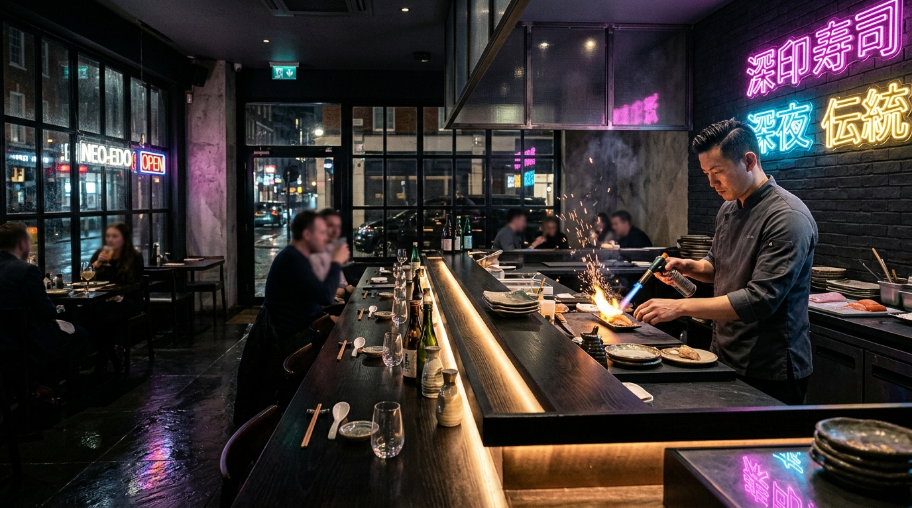

Arroz Akazu & Fuego
Sazonamos nuestro arroz Koshihikari con vinagre rojo fermentado de tres años y sellamos cortes nobles al soplete frente al comensal.

SOHO · 42 ELECTRIC LANTERN ALLEY · LONDON W1F 8NX
Una barra clandestina donde la tradición omakase de Tokio se encuentra con el pulso nocturno de Soho. Diez creaciones imaginarias elaboradas al momento con fuego, yuzu, trufa y pesca de línea.
Madera hinoki carbonizada, luz cian y magenta reflejada en pizarra volcánica y un equipo de itamaes trabajando frente a ti.
Sazonamos nuestro arroz Koshihikari con vinagre rojo fermentado de tres años y sellamos cortes nobles al soplete frente al comensal.
Vinilos synth-jazz japoneses, iluminación neón regulada y una barra íntima de solo 16 plazas oculta tras una puerta corredera.
Cada uno de nuestros 10 platos incluye sugerencia de sake Junmai Daiginjo o cóctel de autor con destilados botánicos japoneses.
Escondido entre Berwick Street y Wardour Street, busca el farolillo de neón magenta con el kanji 光線 junto a la puerta de acero negro.
+44 20 7946 0821
reservations@kosen-neonsushi.example
Disponemos de 16 plazas frente al itamae y 6 cabinas privadas con iluminación ambiental regulable. Confirmación instantánea.
📍 42 Electric Lantern Alley, Soho, London W1F 8NX